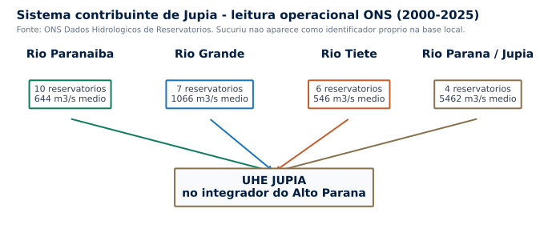
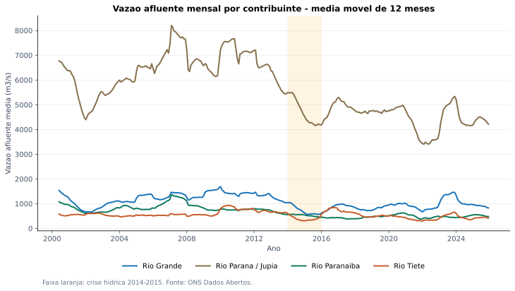
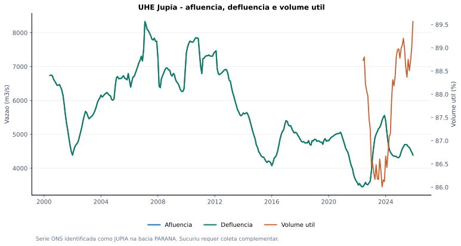
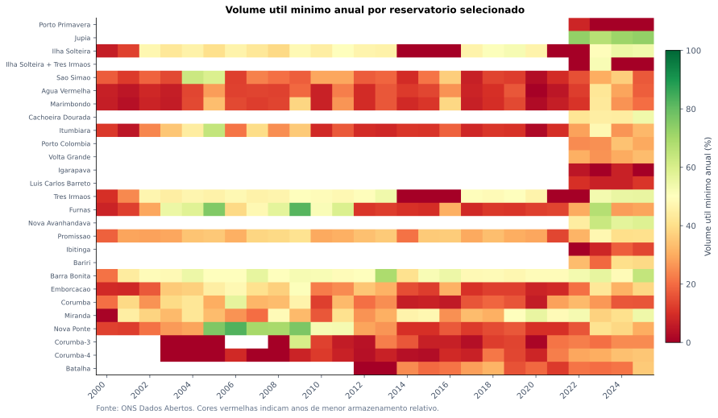
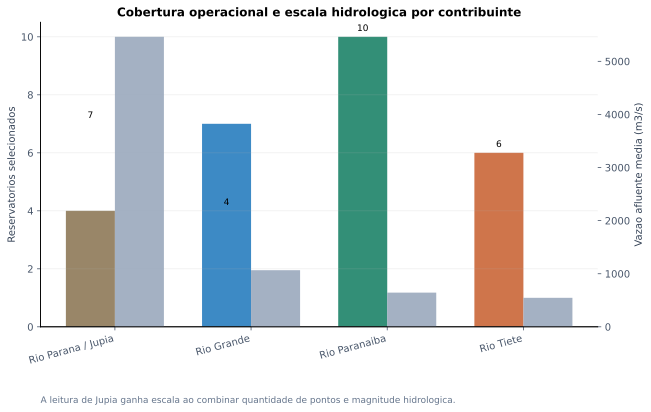
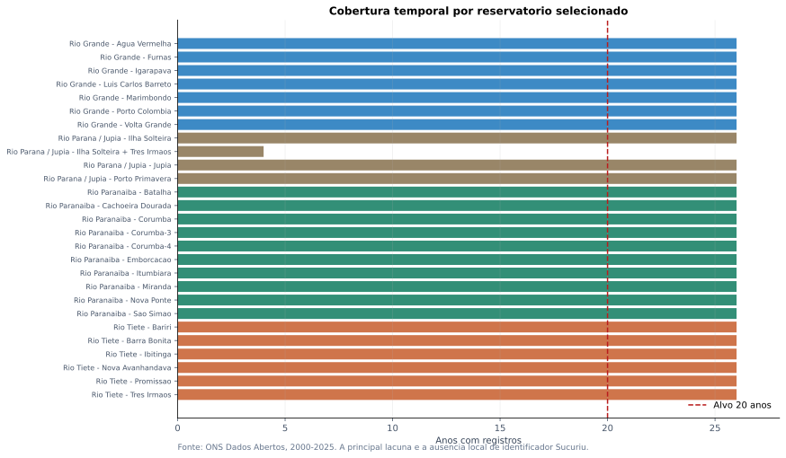
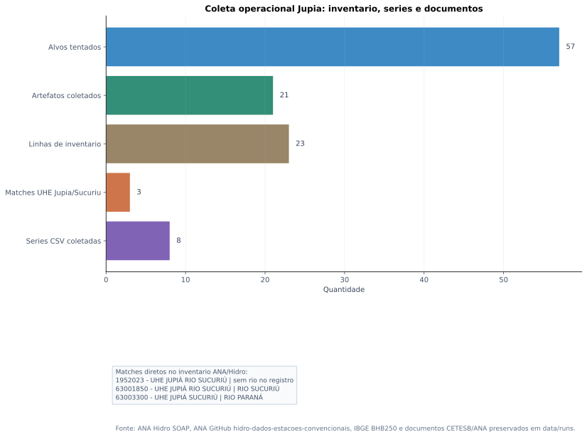

Sistema contribuinte de Jupia

descriptionO QUE MOSTRA
Diagrama dos quatro blocos operacionais usados nesta primeira leitura: Grande, Paranaiba, Tiete e Parana/Jupia.
lightbulbINTERPRETACAO ANALITICA
Jupia deve ser lido como no integrador do Alto Parana. O Tiete continua relevante, mas agora aparece junto com Grande, Paranaiba e o eixo Sucuriu/Jupia confirmado no inventario ANA.
A unidade analitica deixa de ser apenas a cascata do Tiete e passa a ser a bacia contribuinte integrada de Jupia.
Vazao afluente mensal por grande contribuinte

descriptionO QUE MOSTRA
Serie mensal media de vazao afluente por bacia operacional ONS, agregando os reservatorios selecionados em cada contribuinte.
lightbulbINTERPRETACAO ANALITICA
A comparacao mostra a escala relativa dos contribuintes que condicionam Jupia. Grande e Paranaiba ampliam fortemente o contexto hidrologico em relacao a uma leitura Tiete-only.
O relatorio de Jupia precisa reunir os tres grandes rios em vez de reaproveitar apenas a narrativa do Tiete.
No Jupia: afluencia, defluencia e volume util

descriptionO QUE MOSTRA
Serie mensal da UHE Jupia no ONS, com vazoes afluente/defluente e volume util medio.
lightbulbINTERPRETACAO ANALITICA
A serie posiciona Jupia como receptor operacional do sistema. A coleta complementar ja identificou os codigos ANA ligados a UHE Jupia/Sucuriu, permitindo uma ponte posterior com series convencionais e qualidade da agua.
Nos dados ONS, o ponto auditavel e JUPIA; no inventario ANA, UHE JUPIA SUCURIU aparece com codigo 63003300.
Anos criticos por reservatorio

descriptionO QUE MOSTRA
Mapa de calor do volume util minimo anual para os reservatorios selecionados.
lightbulbINTERPRETACAO ANALITICA
O painel permite identificar anos de estresse sincronizado e diferenciar respostas de cabeceira, contribuintes e no receptor.
Eventos secos devem ser avaliados como sinais sistêmicos, nao como anomalias isoladas de uma unica cascata.
Cobertura de estacoes e escala hidrologica

descriptionO QUE MOSTRA
Comparacao entre numero de reservatorios ONS selecionados e vazao media por bacia contribuinte.
lightbulbINTERPRETACAO ANALITICA
O grafico explicita por que a demanda pede Jupia: a bacia ampliada agrega mais pontos operacionais e maior diversidade hidrologica do que a leitura Tiete isolada.
Paranaiba e Grande acrescentam densidade operacional e contexto hidrologico ao no Jupia.
Cobertura temporal da base usada

descriptionO QUE MOSTRA
Matriz de cobertura temporal por bacia e reservatorio, comparada ao alvo minimo de 20 anos.
lightbulbINTERPRETACAO ANALITICA
A base ONS local atende ao alvo temporal para os principais reservatorios selecionados. A coleta operacional acrescenta inventario ANA e documentos brutos para qualidade/poluicao, mas a serie exata 63003300 ainda nao veio como CSV historico.
A camada Jupia agora tem descoberta, inventario de estacoes e coleta bruta rastreavel; falta extrair os documentos de qualidade/poluicao para variaveis tabulares.
Evidencia de coleta: estacoes Jupia/Sucuriu

descriptionO QUE MOSTRA
Resumo dos matches ANA/Hidro para UHE Jupia/Sucuriu e das series historicas convencionais disponiveis no repositorio ANA/GitHub.
lightbulbINTERPRETACAO ANALITICA
A demanda UHE JUPIA SUCURIU foi localizada no inventario oficial, mas a disponibilidade de CSV historico varia por codigo. Isso separa identidade da estacao, disponibilidade de serie e lacuna operacional.
Foram encontrados 3 matches diretos para a estacao solicitada e 8 series CSV convencionais em codigos proximos.